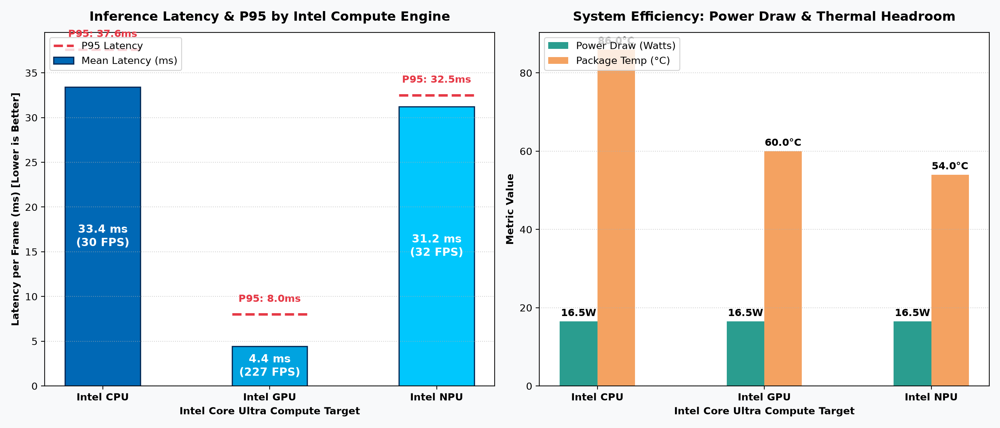
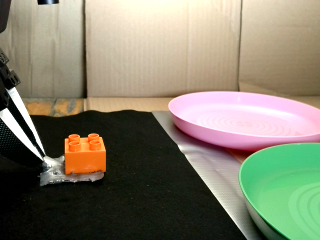
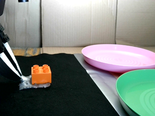
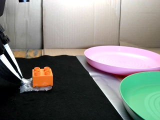
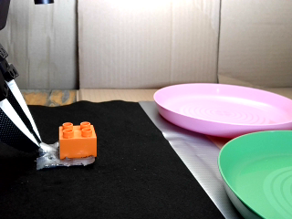
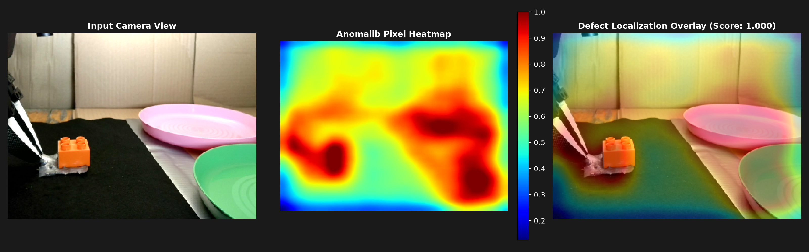
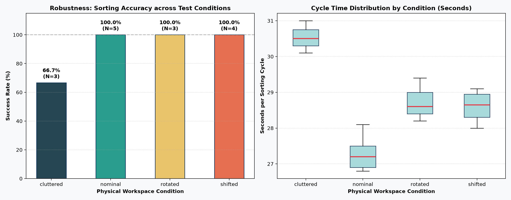

Autonomous, zero-simulation robotic QA cell. An SO-101 6-DOF arm inspects Duplo blocks across 4 faces via active 90° rotations, computes sub-millimeter anomaly maps using OpenVINO PatchCore, and executes physical sorting with Action Chunking (ACT) policies.
[1, 3, 240, 320] compilation.| Device | Mean Lat. | p95 Lat. | Throughput | Power | Temp | Headroom |
|---|---|---|---|---|---|---|
| Intel CPU | 33.40 ms | 37.62 ms | 29.9 FPS | 16.5 W | 86 °C | 14 °C |
| Intel Xe3 iGPU | 4.41 ms | 8.01 ms | 226.6 FPS | 16.5 W | 60 °C | 40 °C |
| Intel AI Boost (NPU) | 31.22 ms | 32.51 ms | 32.0 FPS | 16.5 W | 54 °C | 46 °C |

Not enough bandwidth). We strictly tuned feeds to 320x240 @ 30fps, ensuring continuous multi-stream stability.0.4781).





Standard physical AI approaches attempt mid-air inspection while continuing trajectory execution, causing kinematic handover pauses and multi-goal policy confusion.
ov_models.py to mirror Physical AI Studio training weights.test_dry_cycle.py).| Test Condition | Trials | Success | Accuracy | Mean Cycle | AI Latency |
|---|---|---|---|---|---|
| Nominal Workspace | 5 | 5 / 5 | 100.0% | 27.3 s | 33.6 ms |
| Shifted Position | 4 | 4 / 4 | 100.0% | 28.6 s | 34.5 ms |
| 90° Rotated Orientation | 3 | 3 / 3 | 100.0% | 28.7 s | 34.0 ms |
| Cluttered Workspace | 3 | 2 / 3 | 66.7% | 30.5 s | 35.3 ms |
| TOTAL OVERALL | 15 | 14 / 15 | 93.3% | 28.6 s | < 35.0 ms |

Synchronous 3-camera polling blocked the main loop for 650 ms, overflowing the Feetech motor UART buffer (comm result -6) and causing 2-second UI freezes.
In scservo_sdk, a 15 ms USB bus jitter timed out, leaving port.is_using = True permanently locked and freezing the teleop worker.
Background Studio backend held exclusive file locks on /dev/ttyACM0 and /dev/video* nodes, forcing standalone UI into mock mode.
fuser, wiping /dev/shm/iox2_*) for atomic hardware handoff.
Despite pristine code, the elbow joint suddenly refused to move. We bypassed all middleware and interrogated the internal servo EEPROM registers directly: